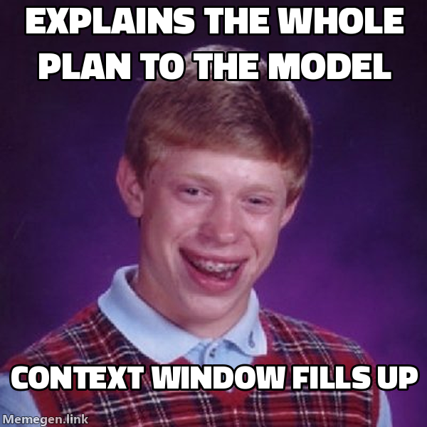

A unit of work travels a fixed path from "we should build X" to a shipped, verified commit: /gabe-scope → /gabe-plan → /gabe-red → /gabe-execute → /gabe-review → /gabe-commit → /gabe-push. Each step reads a bit of .kdbp/ state (the project's on-disk memory — see What KDBP is), does one job, and writes the next step's inputs back to disk. Nobody has to remember what happened three sessions ago — the files remember for you. This page teaches the shape of that cycle; for what each beat reads and writes in detail, see Beats & commands.
01The idea in one paragraph
Think of the loop as a relay race where the baton is a folder, not a runner's memory. /gabe-scope writes down the premise once. /gabe-plan turns a slice of it into phases, each with a size decision and a declared proof. /gabe-red puts the failing test cases on the record before any code exists, so "done" has something to become true against. /gabe-execute writes the code that turns those cases green, one task at a time. /gabe-review prices the risk in what changed. /gabe-commit is the one gate everything must pass through. /gabe-push gets it into the world and proves it's actually live. If a session ends mid-phase, the state table remembers exactly where it stopped — the next session (or the next model) picks the baton up without a hand-off conversation.
A single command can only honestly end in one state — but test-first needs two of the same measurement: first the tests fail, then they pass. Fold both into one "execute" step and the failure is swallowed by the act that produced the green, leaving only self-graded evidence. So the failing state gets a beat of its own, whose whole deliverable is a committed red. That's the load-bearing idea behind /gabe-red.
02The cycle, at a glance
Every arrow below is one command call. /gabe-next is the router in the middle — it reads the current phase's status cells and dispatches to whichever beat comes next, so in practice you rarely choose manually. The human sits above the loop, approving scope, picking a tier, and triaging findings, rather than typing every step.
flowchart TD SC["/gabe-scope<br>premise + phase arc"] PL["/gabe-plan<br>phases · tier · declared proof"] NX["🔀 /gabe-next<br>reads PLAN.md status cells"] RD["/gabe-red<br>commit the failing cases"] EX["/gabe-execute<br>turn red → green"] RV["/gabe-review<br>price the risk · triage"] CM["/gabe-commit<br>the quality gate"] PU["/gabe-push<br>CI + deploy-verify"] WK["🚶 walk record<br>a human witnesses it"] H["👤 Human<br>approves · picks tier · triages"] SC --> PL --> NX NX --> RD --> EX --> RV --> CM --> PU PU -.->|next phase| NX PU -.->|record the walk| WK H -.->|checkpoints| SC H -.->|picks tier| PL H -.->|triages| RV
⬜ not started · 🔄 in progress · ✅ done. A phase moves through the cells Red · Exec · Review · Commit · Push (Red and a Center cell are optional columns a plan can carry). /gabe-next reads those cells and routes — the full routing table lives on Beats & commands.
03What sits off the beat line
Two kinds of work orbit the loop rather than living inside it:
- The witness — the walk record. Every automated signal in the loop is still produced by an agent. A walk record (
walks.jsonl; the/gabe-walkskill was archived 2026-07-30 — the record outlives it) captures the one thing no machine can: a human actually used the feature, on a date, with a result. It records; it never judges. A station nobody has walked stays red until someone signs it. - The advisors — analysis satellites.
roast,myopic,health,debt,assess, andalignare adversarial tools you pull in on demand — before a risky change, during a retro, when something feels fragile. Nothing forces you to run them at a fixed step; they attack from an angle the loop doesn't naturally take and land their findings back where the loop will read them.
04The cadence rule: one phase per session
A session should finish one phase, or leave it in a state the next session can resume cleanly — don't stop mid-task with uncommitted work and no note. Every phase transition is a natural place to end: the status-cell tick is already the checkpoint, so honoring it costs nothing extra. When you do have to stop mid-task, /gabe-handoff writes the resume state for you — a paste-able next-session prompt plus a synced .kdbp/ — so the interruption still lands on a clean boundary.
This rule exists because sessions will get interrupted — context runs out, priorities shift. The loop is built so that's fine, as long as the interruption happens at a clean boundary: a ticked task, a committed change, a phase pointer that still points somewhere real. What breaks the loop is stopping without writing that state down. The next session (possibly a different model entirely) trusts the files, not the transcript.

05Where the human checkpoints sit
The loop automates the mechanical parts — routing, ticking, checking — and deliberately leaves the judgment calls to you. Three points always stop and wait:
- Plan · tier pick — MVP, Enterprise, or Scale.
/gabe-planshows the trade-off for each phase and waits. Escalating past MVP needs a one-sentence reason logged toDECISIONS.md; de-escalating needs none. - Review · triage — fix, defer, or accept each finding.
/gabe-reviewnever silently fixes or ignores; deferred findings land visibly inPENDING.md. - Commit · gate — nothing critical slips through.
/gabe-commitblocks on unresolved CRITICAL findings. You can force a commit through with a written justification, but never by accident.
06Where to go next
This page showed the shape. The next layer down is the contract every beat shares, and the beat-by-beat detail.
- The E1–E7 execution contract — the seven floors under every command: evidence, run-before-✅, no silent downgrade, reuse-first, state-sync, missing-anchor-stop, report-where.
- Beats & commands — every beat in full: what it reads, what it writes, the gate it enforces, and the zero-logic router table.
- What KDBP is — the core idea behind every file this page named.
This page references
Derived from the page's own text on every build — no link table is maintained, and a reference that stops resolving stops appearing.